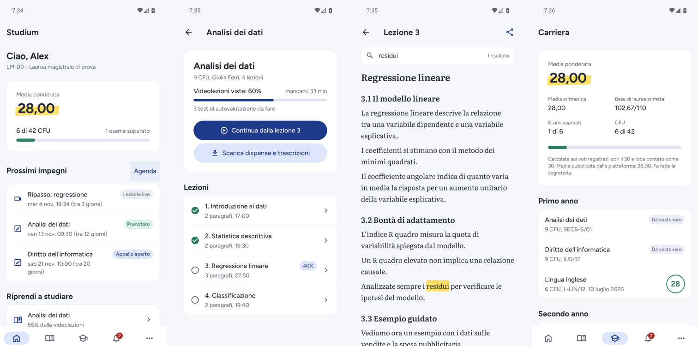

Open source · Licenza MIT · Android
Studium
Il client open-source definitivo per gli studenti Multiversity
Lezioni, trascrizioni, dispense offline, carriera, esami e avvisi in un'app nativa e veloce. Nessun server di mezzo: il telefono parla direttamente con la tua università.
APK per arm64-v8a per quasi tutti i telefoni, armeabi-v7a per i 32 bit.

Fatto per studiare, non per raccogliere dati
Studium legge i tuoi dati dalla piattaforma dell'ateneo e li organizza per lo studio. Non scrive nulla al posto tuo.
-
Privacy First · Zero Server
Nessun server Studium, nessun account, nessuna telemetria. I tuoi dati restano sul telefono.
-
Multi-Ateneo
Pegaso, Mercatorum, San Raffaele: pensato per le università della stessa piattaforma studenti. Verificato end-to-end su un ateneo.
-
UI nativa e fluida
Interfaccia Material in React Native, tema chiaro e scuro dal sistema, dispense e trascrizioni anche offline.
-
Open Source Transparency
Codice MIT su GitHub, test automatici in CI, decisioni documentate. Puoi verificare tutto quello che fa.
- Home "Da fare"
- Esiti da confermare, prenotazioni in chiusura, lezioni da riprendere.
- Esami e appelli
- Scadenze e promemoria; si prenota sulla pagina ufficiale.
- Trascrizioni
- Dai sottotitoli delle lezioni, con ricerca ed evidenziatore.
- Carriera
- Libretto, medie e base di laurea stimata.
- Quiz locali
- Domande dalle trascrizioni, offline, con ripasso a intervalli.
- Agenda e avvisi
- Esami, lezioni live e comunicazioni dell'ateneo.
Sicurezza e trasparenza
Perché puoi fidarti: le garanzie sono scritte nel codice, non solo promesse.
-
La password resta tua
Accedi sulla pagina ufficiale dell'ateneo, aperta dentro l'app. Studium non vede, non salva e non invia la password.
-
Token cifrato sul telefono
L'app conserva solo il token di accesso di breve durata, cifrato con il Keystore di Android. Il token di rinnovo non viene mai letto.
-
Diretto con l'università
Le richieste vanno dal telefono ai server dell'ateneo. Nessun server Studium in mezzo, nessuna telemetria.
-
Solo lettura, garantito
Una guardia blocca ogni scrittura verso l'API studenti e ogni chiamata di tracciamento della frequenza. La frequenza la registra solo il player ufficiale, mentre guardi.
-
Pagine web confinate all'ateneo
Login, player e pagine ufficiali possono aprire solo gli indirizzi dell'università: i link esterni e i deep link verso altri siti vengono bloccati. Le configurazioni importate vengono verificate e i loro domini mostrati prima della conferma.